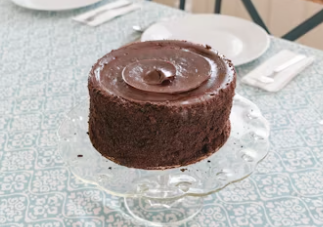

Receita de bolo de chocolate

Ingredientes
- 2 xícaras de açúcar
- 1 3/4 xícaras de farinha de trigo
- 3/4 xícara de cacau em pó
- 1 1/2 colher de chá de fermento em pó
- 1 1/2 colher de chá de bicarbonato de sódio
- 1 colher de chá de sal
- 2 ovos
- 1 xícara de leite
- 1/2 xícara de óleo vegetal
- 2 colheres de chá de extrato de baunilha
- 1 xícara de água fervente
Modo de Preparo
- Preaqueça o forno a 180°C. Unte e enfarinhe duas formas redondas de 22 cm.
- Em uma tigela grande, misture o açúcar, a farinha, o cacau, o fermento, o bicarbonato de sódio e o sal.
- Adicione os ovos, o leite, o óleo e a baunilha. Bata em velocidade média por 2 minutos.
- Adicione a água fervente à massa, misturando bem. A massa ficará bem líquida.
- Divida a massa igualmente entre as formas preparadas.
- Asse por 30 a 35 minutos ou até que um palito inserido no centro saia limpo.
- Deixe esfriar por 10 minutos nas formas e depois desenforme sobre uma grade para esfriar completamente.
- Cubra com a cobertura de sua preferência.